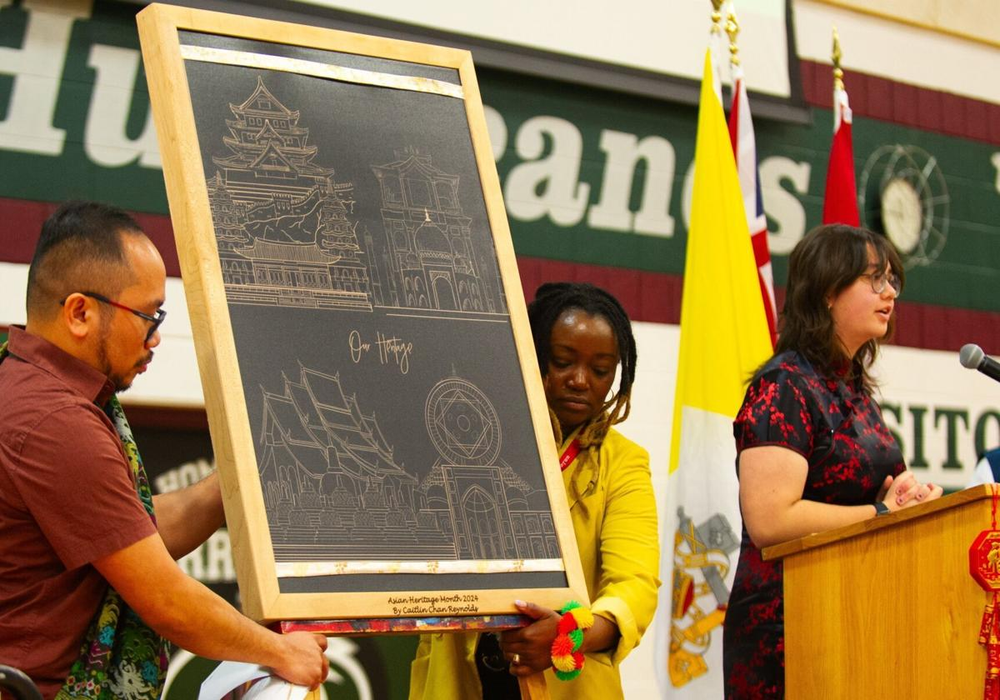

Intro:
Hi, I am currently a first year Computer Science major at the University of Guelph. Aside from coding, I'm intrested in gaming, art and music.
I have been playing musical instruments from a very young age and want to be able to be a "one man band". As of right now, I know how to play guitar, bass, and piano.
I also have a massive intrest in art and have been given many chances to share my art within my school communites.
My interest in coding stemmed from my interest in video games. After taking my first computer science course in high school, I was hooked. The most surprising thing for me was how many different languages there are for programming and how important it is to use the right language for the job.
Coding languages I'm familiar with:
HTML
css
python
java
c
Career Interest
I am currently interested in Web design, cybersecurity or ethical hacking, and machine learning.
For web design I’m interested full-stack development. As someone who has always loved to create the design aspect or web design is a creating output and allows me to have full
control of the aesthetic and layout of the website using html, CSS, and JavaScript. Even allowing me to draw and create small aspects of the website. I am excited to expand my
knowledge further in back-end development. Becoming more familiar with Python, Node.js and MySQL. My goal is to create a responsive environment that are both aesthetically
pleasing and user-friendly.
Recently, cybersecurity has piqued my interest. As I have enjoyed learning more about how computer systems work as well as how they can break. Additionally, I enjoy a good brain
teaser and puzzle and feel as though cybersecurity presents a good challenge of identifying vulnerabilities, securing applications, and a different mindset of thinking. I’m going
to expand my knowledge in areas like network security, penetration testing, and digital forensics, and I hope to earn different certifications that will help me with my career in
the future. My goal is to contribute to creating the digital space safer by building safer and secure systems and helping other understand the risks that come with being plugged
into the internet.
As the technological world continues to expand AI is becoming increasingly popular. The more I hear about it the more interested I become in its ability to solve problems and make its
own decisions. I’m especially interested in where AI can be applied and how it can be beneficial to us without having it do the work for us. As a student AI can be a very good tool to
have you your pocket when used in the right way. I’m exploring the available tools in python, and I’m excited to apply these into projects that will help others. In the future, I hope
to apply these concepts into AI-powered projects that will help the quality of life, from personalized learning tools to possible health systems.
Education:
Univerity of Guelph, Bachlor of Computing (Honours), with a minor in Psychology (hoping to do an area of emphasis in cyber security or Ai)
Fun Facts:
In high school the school board commissioned me to create a design for Asian heritage month. I got to reveal the art piece and ended up in the paper.

I created the design for my high schools Arts Specialized High Skills Majors (SHSM) SHSM t-shirt
I worked on Set Design and Costumes for my high school's musical production of Grease.
I completed three SHSM's (specialized high skills majors):
Art, music and drama
information communitcation and technology
Aviation and Aerospace, (Giving me to do a duel credit with Seneca collage) Link to article
I completed the French immersion program in high school and passed the Diplôme d'Études en Langue Française (DELF) at the B1 level making me offically bilingual.
.JPG)
.JPG)
.JPG)